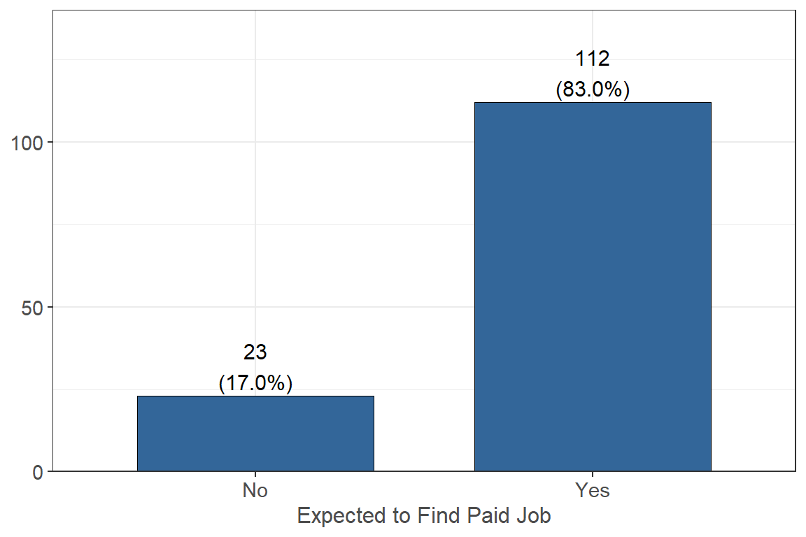
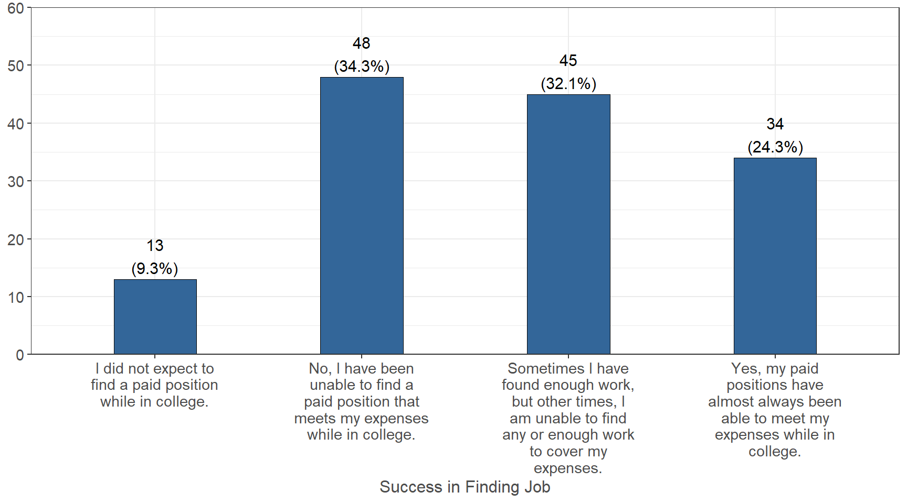
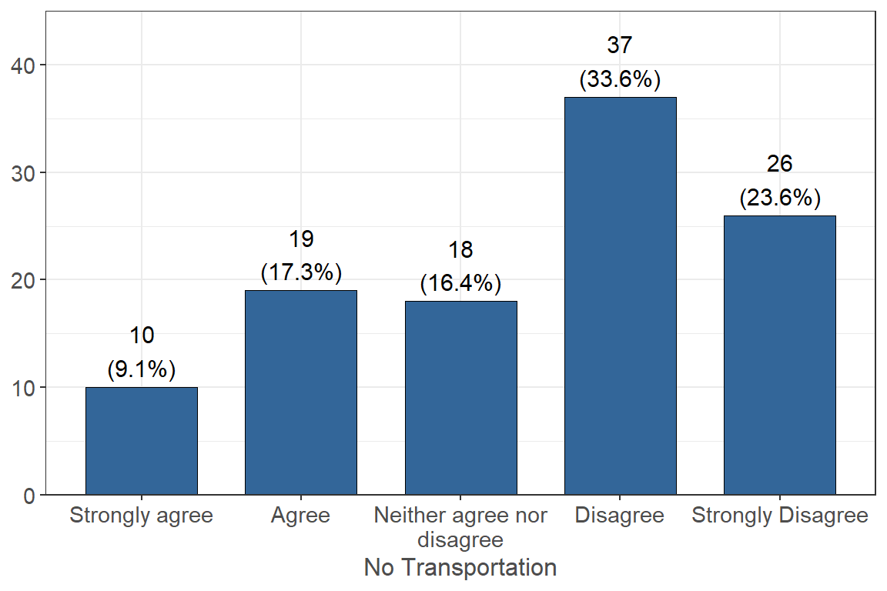
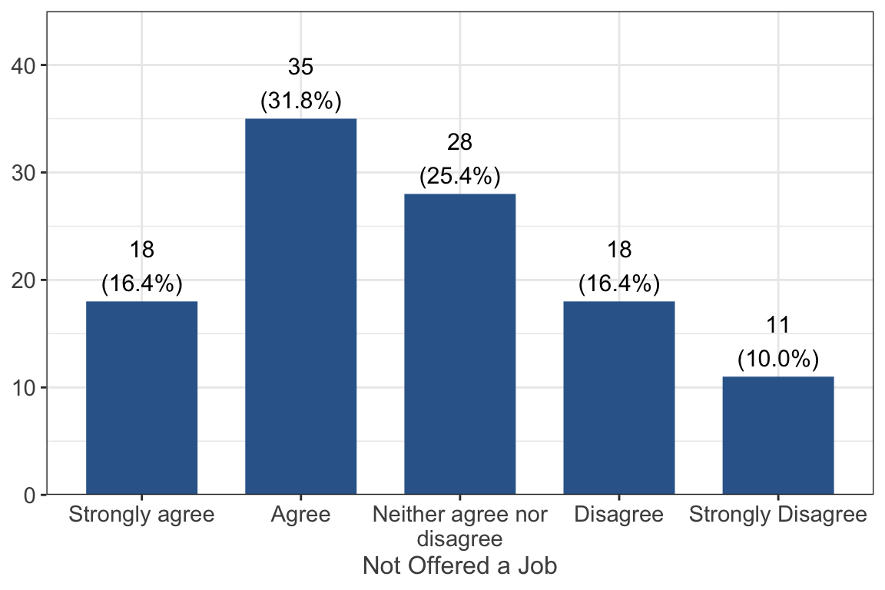
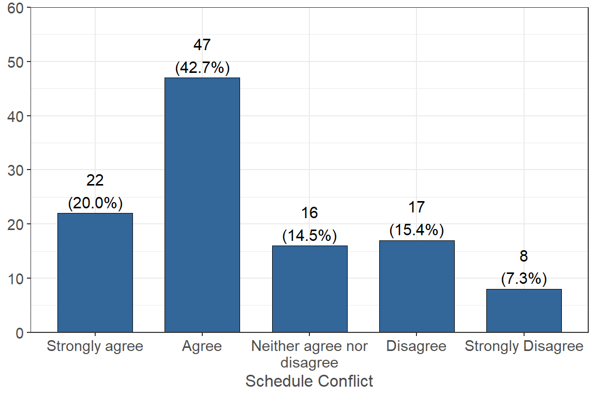
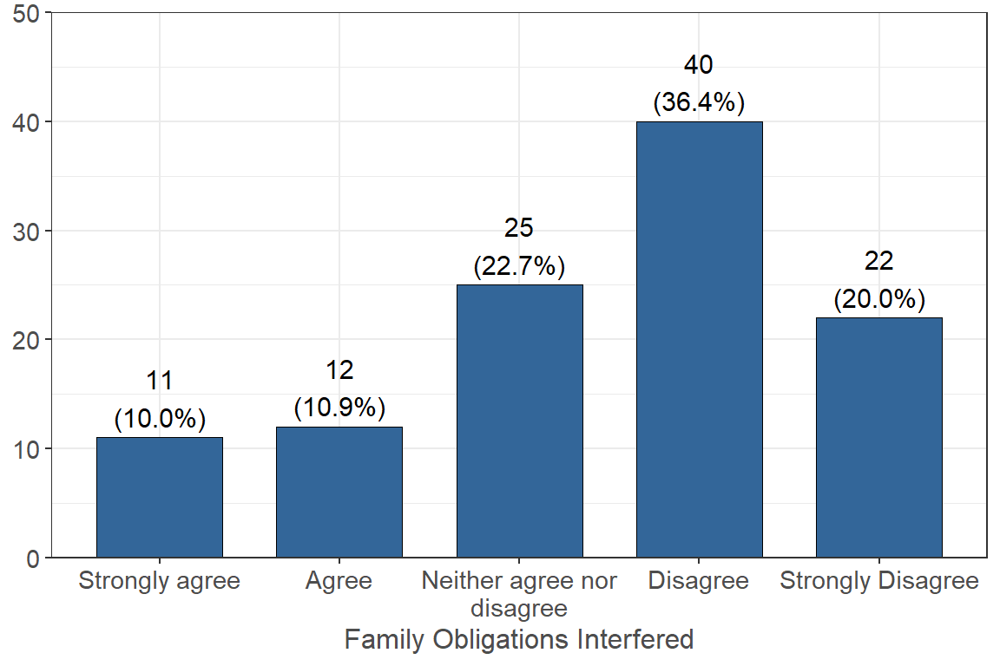
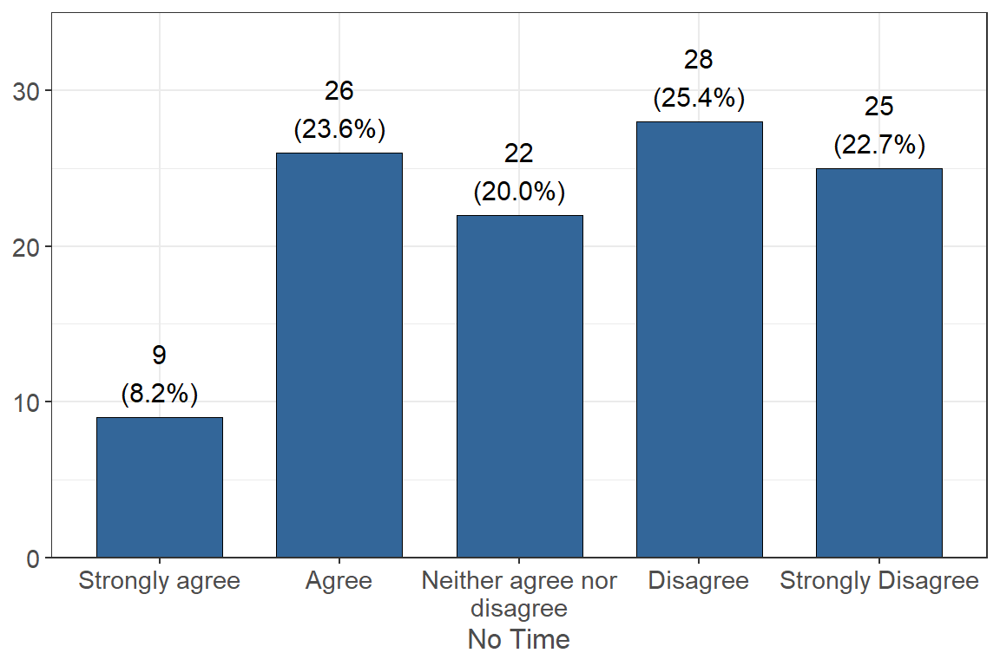
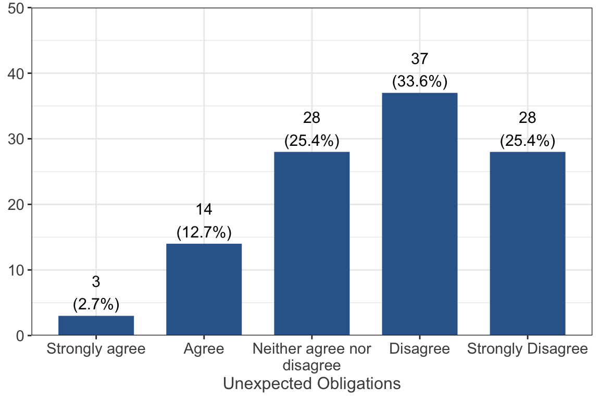
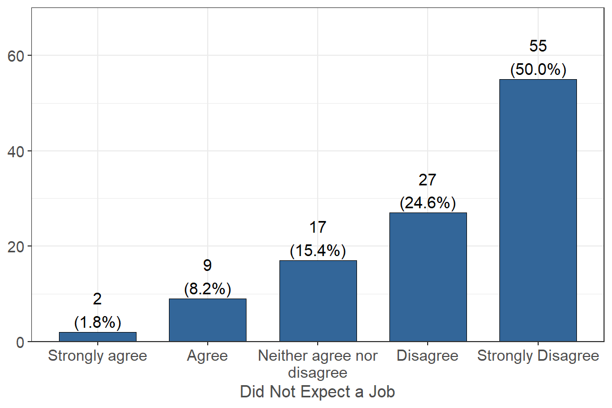

Before attending college, did you expect to find or want to find a PAID job or PAID internship during the academic year to help cover your college expenses and personal expenses while in college?

The majority of students (n = 112 83.0%) reported that they did expect to find a paid job during the academic year to help support their expenses while 17.0% (n = 23) did not.
If you expected or wanted to find a paid job or paid internship, were you successful in securing a position that paid enough to cover your expenses?

A little over a third, or 34.3% (n = 48) of students, reported that they were not able to find a paid position that meets their expenses and 32.1% (n = 45) reported they were sometimes able to find a paid position. 24.3% (n = 34) of students reported that they were able to find a job that almost always has been able to meet their expenses.
I was offered jobs, but did not have transportation to a job or available jobs were not within walking/bike riding/bus distance of my residence or campus.

33.6% (n = 37) of respondents reported that they disagree with the statement that they were not able to work because they had no transportation and 17.3% (n = 19) agreed with the statement.
I searched and applied for jobs but was not offered a job.

31.8% (n = 35) of respondents agreed that they searched for a job but was never offered a job and 16.4% (n = 18) reported they disagree with the statement.
I searched for jobs, but my class schedule or study time was not compatible with any jobs that were offered to me.

42.7% (n = 47) of respondents agreed that their class or study schedule conflicted with the work hours so were not able to work and 15.4% (n = 17) reported that they disagree with the statement.
I searched for jobs, but family obligations interfered with any jobs offered to me.

36.4% (n = 40) of respondents disagreed that their family obligations interfered with any jobs offered to them and 10.9% (n = 12) agreed with the statement.
I expected to find a job, but never searched for a job because my school work (studying) did not allow time for a job.

25.4% (n = 28) disagreed that they expected to find a job, but never searched for one because their school work did not allow time and 23.6% (n = 26) agreed with the statement. 20.0% (n = 22) neither agreed nor disagreed with the statement.
I expected to find a job, but never searched for a job, due to other unexpected obligations or conflicts that did not allow time for a job.

33.6% (n = 37) disagreed that they expected to find a job, but due to other unexpected obligations, they did not find a job and 12.7% (n = 14) agreed with the statement. 25.4% (n = 28) neither agreed nor disagreed with the statement.
I did not expect to or want to find a job while in college.
